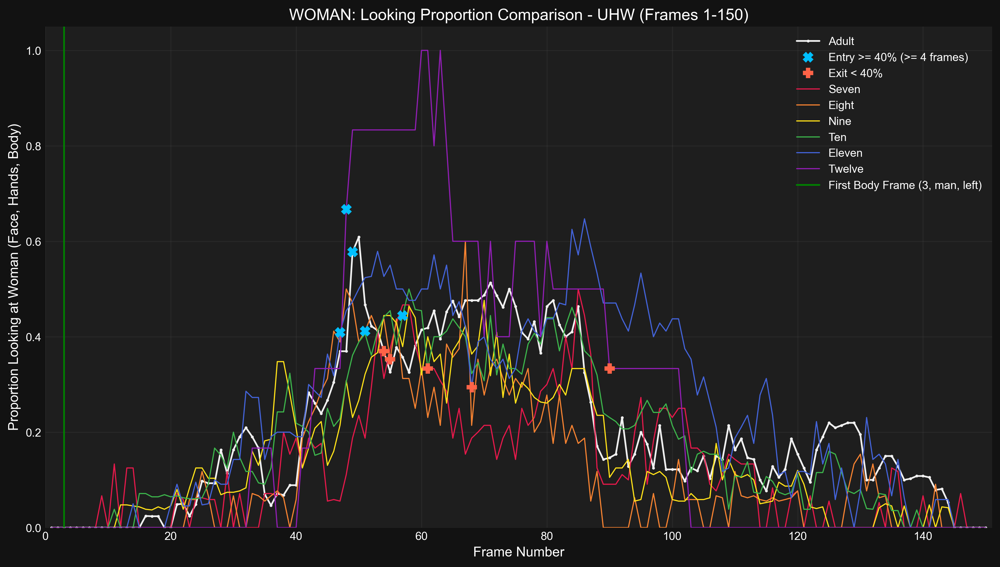
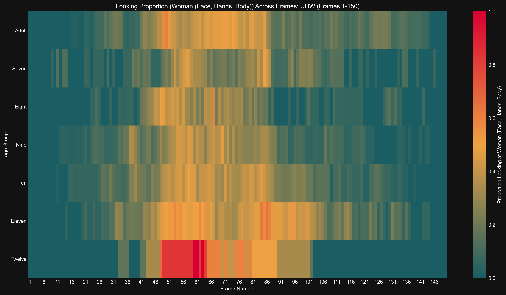

Generated: 2025-04-16 03:37:24
Time series of proportion looking at Woman (Face, Hands, Body) for Adult
Results (Adult):- Entry (≥40%, ≤F75): Frame 49- Exit (<40%): Frame 54- Duration (≥40%): 5 frames- Latency (from body frame): 46 frames
Time series of proportion looking at Woman (Face, Hands, Body) for Seven
Results (Seven):- Entry (≥40%): No sustained entry found.
Time series of proportion looking at Woman (Face, Hands, Body) for Eight
Results (Eight):- Entry (≥40%, ≤F75): Frame 51- Exit (<40%): Frame 57- Duration (≥40%): 6 frames- Latency (from body frame): 48 frames
Time series of proportion looking at Woman (Face, Hands, Body) for Nine
Results (Nine):- Entry (≥40%): No sustained entry found.
Time series of proportion looking at Woman (Face, Hands, Body) for Ten
Results (Ten):- Entry (≥40%, ≤F75): Frame 57- Exit (<40%): Frame 68- Duration (≥40%): 11 frames- Latency (from body frame): 54 frames
Time series of proportion looking at Woman (Face, Hands, Body) for Eleven
Results (Eleven):- Entry (≥40%, ≤F75): Frame 47- Exit (<40%): Frame 71- Duration (≥40%): 24 frames- Latency (from body frame): 44 frames
Time series of proportion looking at Woman (Face, Hands, Body) for Twelve
Results (Twelve):- Entry (≥40%, ≤F75): Frame 48- Exit (<40%): Frame 90- Duration (≥40%): 42 frames- Latency (from body frame): 45 frames
Detailed time series comparing proportion looking at Woman (Face, Hands, Body) across age groups.
Bar plot showing latency from body frame to >=40% entry (entry <= F75) looking at Woman (Face, Hands, Body) for uhw
Results (Latency in Frames, 0 if no valid entry ≤F75): seven: 0, eight: 48, nine: 0, ten: 54, eleven: 44, twelve: 45, adult: 46
Bar plot showing duration >= 40% (entry <= F75) looking at Woman (Face, Hands, Body) for uhw
Results (Duration in Frames, 0 if no valid entry ≤F75): seven: 0, eight: 6, nine: 0, ten: 11, eleven: 24, twelve: 42, adult: 5
Bar chart comparing mean proportion looking at Woman (Face, Hands, Body) across age groups.
Results (Mean Proportion): Seven: 0.126, Eight: 0.118, Nine: 0.147, Ten: 0.181, Eleven: 0.243, Twelve: 0.229, Adult: 0.196
Heatmap showing proportion looking at Woman (Face, Hands, Body) across frames and age groups.
